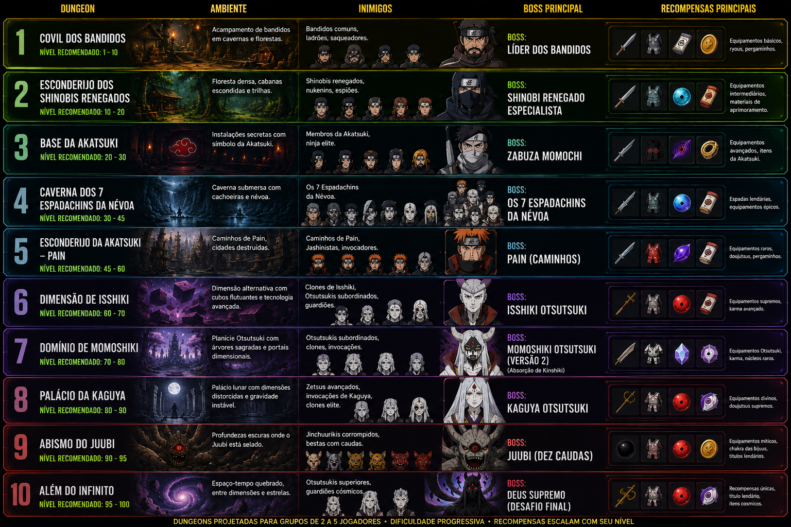

Chefes
Chefes são versões mais fortes de criaturas comuns ou guardiões de uma área específica. Cada tipo de criatura pode ter seu próprio chefe, como chefes de ratos, lobos, ursos e pequenas aldeias.
A progressão pode seguir uma linha natural: ratos normais, ratos maiores e, no final, um chefe de rato. Esse chefe pode nascer periodicamente no local dos ratos e dropar itens específicos para crafting ou para venda.
Outros exemplos seguem a mesma lógica: chefe dos lobos, chefe dos ursos, chefe de uma aldeia pequena e outros guardiões regionais.
Bosses
Bosses são personagens específicos do anime e representam as ameaças principais do conteúdo avançado. Aqui entram nomes como Zabuza, membros da Akatsuki, Momoshiki e outros inimigos marcantes da história.
Esses encontros podem nascer periodicamente, ficar ativos por tempo indeterminado ou aparecer apenas em eventos especiais. Alguns bosses também podem exigir vários jogadores por causa da dificuldade, mecânicas e volume de dano.
| Categoria | Exemplo | Origem | Uso no jogo |
|---|---|---|---|
| Chefe de criatura | Chefe de Ratos | Local / criatura comum | Spawn periódico, loot de crafting e venda. |
| Chefe de criatura | Chefe de Lobos | Local / criatura comum | Guardião regional com loot utilitário. |
| Chefe de criatura | Chefe de Ursos | Local / criatura comum | Alvo mais forte da região, com drop raro. |
| Chefe de criatura | Chefe de Aldeia | Local / área pequena | Guardião de mapa, missão ou ponto estratégico. |
| Chefe anime | Orochimaru | Naruto clássico / Shippuden | Chefe recorrente com serpentes, veneno e evasão. |
| Chefe anime | Itachi | Shippuden | Chefe tático com genjutsu, fogo e pressão concentrada. |
| Chefe anime | Obito | Shippuden | Chefe com espaço-tempo, intangibilidade e fases especiais. |
| Chefe anime | Kabuto | Shippuden | Chefe técnico com invocações, suporte e transformação. |
| Chefe anime | 7 Espadachins da Névoa | Naruto clássico / Kirigakure | Cada espadachim pode aparecer como chefe individual com arma própria. |
| Boss anime | Zabuza | Naruto clássico | Boss de progressão inicial e combate solo ou em grupo pequeno. |
| Boss anime | Haku | Naruto clássico | Boss de apoio, encontro de história ou duo. |
| Boss anime | Hiruzen | Naruto clássico | Boss de vila, com repertório versátil de técnicas. |
| Boss anime | Deidara | Shippuden | Boss de explosivos, com dano em área e movimentação. |
| Boss anime | Sasori | Shippuden | Boss de marionetes, veneno e fases múltiplas. |
| Boss anime | Kisame | Shippuden | Boss de água, resistência e dano de longo combate. |
| Boss anime | Momoshiki | Boruto | Boss de endgame, com absorção e contra-ataques fortes. |
| Boss anime | Jigen | Boruto | Boss com força bruta, mobilidade e pressão constante. |
| Boss anime | Isshiki | Boruto | Boss premium de conteúdo tardio, muito acima da média. |
| Boss anime | Code | Boruto | Boss de avanço futuro, com alta agressividade e ameaça global. |
| Boss anime | Daemon | Boruto | Boss com mecânica especial e alto potencial de perigo. |
| Boss anime | Boruto / Kawaki | Boruto | Bosses de arco tardio, usados em eventos ou conteúdo especial. |